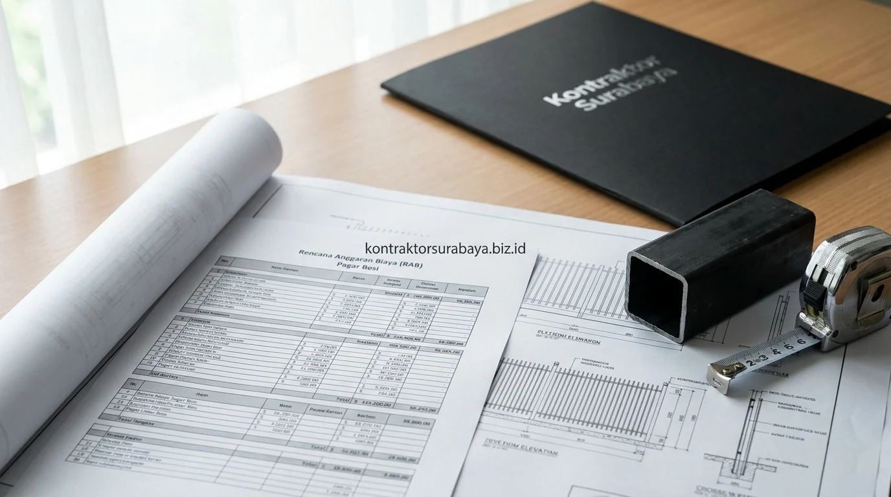

Pagar rumah bukan hanya garda terdepan sistem keamanan properti hunian Anda di kawasan Sidoarjo seperti Waru, Taman, Sukodono, Gedangan, hingga Buduran, tetapi juga elemen pembentuk kesan pertama (curb appeal) dari sebuah fasad rumah modern. Banyak pemilik rumah bertanya-tanya mengenai estimasi biaya pembuatan pagar besi hollow per meter lari atau meter persegi. Menghitung Rencana Anggaran Biaya (RAB) pagar secara transparan mencegah over-budget dan memastikan material yang terpasang kokoh tahan cuaca hingga puluhan tahun.
1. Faktor yang Menentukan Estimasi Biaya Pagar Besi Hollow per Meter
Ketebalan material besi hollow, tinggi pagar yang direncanakan, jenis finishing cat, dan kompleksitas motif desain adalah empat faktor utama yang menentukan variasi biaya pagar minimalis per meter:
- Ketebalan Besi Hollow Galvanis: Ketebalan 1,2 mm, 1,4 mm, hingga 1,8 mm memiliki perbedaan harga material dasar yang signifikan namun menentukan ketahanan benturan.
- Dimensi Tinggi Pagar: Pagar standar perumahan (tinggi 1,2 m – 1,5 m) membutuhkan volume besi lebih hemat dibanding pagar tinggi privasi (1,8 m – 2,2 m).
- Metode Finishing Lapisan Cat: Penggunaan cat semprot duco mobil standar memiliki estimasi biaya berbeda dibanding metode powder coating oven pabrik.
- Kompleksitas Motif & Ornamen: Model garis vertikal/horizontal simpel lebih ekonomis dibanding kombinasi plat perforated, laser cutting CNC, atau kisi-kisi woodplank GRC.
2. Komponen yang Termasuk dalam Estimasi Biaya Pagar Minimalis
Rangka besi hollow, material penutup atau ornamen, proses finishing cat, dan jasa pemasangan adalah empat komponen yang idealnya tercantum terpisah dalam estimasi biaya pagar minimalis:
- Rangka Utama Frame: Besi hollow galvanis 40x60 atau 40x80 sebagai bingkai struktur pembawa beban.
- Jari-Jari Kisi Vertikal / Horizontal: Besi hollow 20x40 atau 40x40 dengan jarak kisi rapat (6-8 cm) untuk keamanan optimal.
- Aksesoris Gerak (Hardware): Rel besi siku/UNP, roda bearing baja anti anjlok, handle pintu stainless steel, dan slot gembok baja.
- Pengecatan Dasar & Top Coat: Primer epoxy zinc chromate anti karat dan cat topcoat polyurethane tahan sinar UV.

3. Cat Duco vs Powder Coating untuk Finishing Pagar Besi Hollow
Cat duco memberi hasil akhir yang halus dengan proses aplikasi manual, sementara powder coating memberi lapisan lebih tahan lama melalui proses pelapisan dengan mesin khusus dan oven bersuhu tinggi.
Di wilayah Sidoarjo yang beriklim panas dan memiliki tingkat kelembapan tinggi, powder coating sangat diminati karena tidak mudah mengelupas, anti gores, dan bebas dari risiko tetesan cat (sagging). Namun, bagi pemilik rumah yang mengutamakan fleksibilitas warna dan biaya awal lebih ekonomis, aplikasi cat duco dengan base primer epoxy berkualitas tetap menjadi pilihan favorit yang awet bila dirawat dengan baik.
4. Bagaimana Kondisi Lahan Memengaruhi Total Biaya Pembuatan Pagar?
Kondisi tanah yang tidak rata dan kebutuhan pondasi tambahan pada titik kolom pagar dapat menambah biaya di luar perhitungan material pagar itu sendiri.
Lahan dengan kemiringan kontur (elevasi bertingkat) menuntut pembuatan sistem pagar berundak (stepped fence) serta pemasangan balok sloof beton bertulang dan kolom praktis agar rel dorong tetap rata presisi (waterpass). Tanpa survei elevasi tanah di awal, pintu pagar berisiko macet atau tersangkut saat digeser.
5. Cara Mendapatkan Estimasi Pagar yang Sesuai dengan Budget
Menentukan tinggi dan desain dasar terlebih dahulu, memilih ketebalan material sesuai kebutuhan keamanan, dan meminta rincian tertulis dari penyedia jasa membantu mendapatkan estimasi pagar yang sesuai dengan budget yang tersedia:
- Gunakan Desain Minimalis Garis Lurus: Model garis vertikal tegas menghemat waktu pabrikasi bengkel las dan meminimalkan sisa potongan material terbuang.
- Pilih Besi Galvanis SNI: Mencegah karat dini yang memicu biaya rekondisi dan pengecatan ulang tahunan.
- Minta Dokumen Rincian RAB Transparan: Mengetahui spesifikasi ukuran besi, merk cat, dan jenis roda sebelum menyetujui surat penawaran harga.
6. Kesalahan yang Membuat Biaya Pagar Membengkak dari Estimasi Awal
Mengubah desain di tengah pengerjaan, tidak memeriksa ketebalan material yang ditawarkan, mengabaikan kondisi kontur lahan, dan memilih finishing tanpa membandingkan opsi adalah empat kesalahan yang sering membuat biaya pagar membengkak:
- Perubahan Desain Pasca Pemotongan Besi: Mengakibatkan pemborosan material besi hollow yang sudah dipotong di workshop.
- Tergiur Harga Sangat Murah Tanpa Spesifikasi: Berisiko mendapatkan besi hollow banci (ketebalan 0,8 mm) yang cepat melengkung dan keropos.
- Tidak Memperhitungkan Bobot Pagar untuk Motor Otomatis: Pagar manual yang kelak ingin diubah menjadi pagar otomatis (sliding gate opener) membutuhkan motor dinamo lebih besar jika frame terlalu berat tanpa perhitungan.
"Kekuatan pagar besi ditentukan oleh ketepatan ketebalan profil galvanis dan kualitas sambungan las yang rapi tertutup dempul sebelum pengecatan."
Estimasi biaya pagar yang akurat baru dapat disusun setelah pengukuran panjang pagar dan survei kondisi lahan secara langsung, karena setiap lokasi memiliki kebutuhan yang sedikit berbeda. Pelajari simulasi RAB lebih lanjut pada halaman RAB & estimasi biaya bangun rumah, atau lihat referensi desain pagar lainnya pada galeri proyek kami.